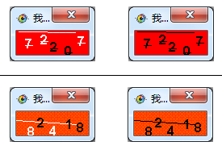

| 命令名称 | Filter_ColorChoose 颜色选留 |
| 命令功能 | (通用图像处理)指定颜色保留或者涂黑滤镜 |
| 语法格式 | TURING.Filter_ColorChoose(value, bColor) |
| 参数说明 |
value：字符串型，指定颜色串BBGGRR-BDGDRD（"0000FF-000080|00FFFF"）(反选效果："@BBGGRR-DBDGDR") bColor：字符串型，设置背景色（默认BBGGRR黑色"000000"） |
| 返回值 | 无 |
| 按键精灵 |
复制代码
'获取屏幕图像数据
Call TURING.Pixel_FromScreen(0, 0, 100, 100)
'色选（指定白色保留）
Call TURING.Filter_ColorChoose("FFFFFF|0000FF|00FFFF|FFFF00")
'色选（指定不保留当前的白色，之后它会变为黑色！！！）
'Call TURING.Filter_ColorChoose("@FFFFFF") '反选
'显示图像预览（会阻塞）
Call TURING.Pixel_Preview()
|
| 滤镜效果 |  |